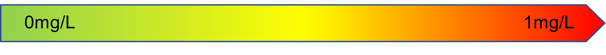
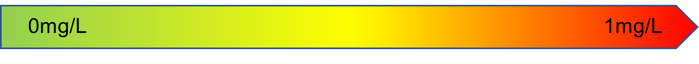

Water Quality Index Calculator
An index value is calculated for each of the following water quality parameters: \(pH\), \(Oxidizing\) \(ability\),\(NO_3^-\), \(Total\) \(Hardness\), \(TSS\), \(Cl^-\), \(SO_{4}^{2-}\), \(Fe^{+2,\,3}\), \(F^-\), \(Cu^{+2}\). A higher value of each index indicates better water quality.


 
Simple Water Quality Index:
WQI
Good (81-100)
Fair (51-80)
Marginal (30-50)
Poor (0-29)
| WQI | Interpretation |
|---|---|
| Good (81-100) |
Water quality is exceptional, meeting all safety standards for human consumption suggested by various agencies around the world. |
| Fair (51-80) |
Water quality is fair, generally safe for human consumption but may require some treatment to address minor issues. |
| Marginal (30-50) |
Water quality is marginal, can sustain aquatic life and ecosystems but may require significant treatment for human consumption. |
| Poor (0-29) |
Water quality is poor, may be suitable for tolerant species but attention needed for sustaining sensitive aquatic life and ecosystems. |